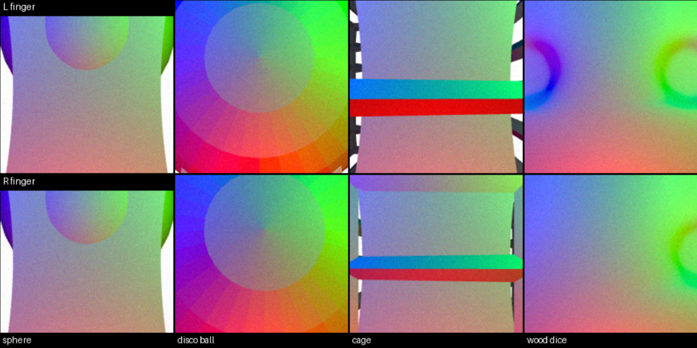

01 — Jul 2026

Tactile-to-Visual Representation Learning for VLA Models
BSc Thesis Project · University of Padua
Machine Learning · PyTorch · OpenVLA · DIGIT
A multimodal representation framework projecting DIGIT optical tactile signals into the frozen visual latent space of a Vision-Language-Action model.